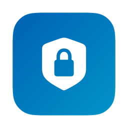
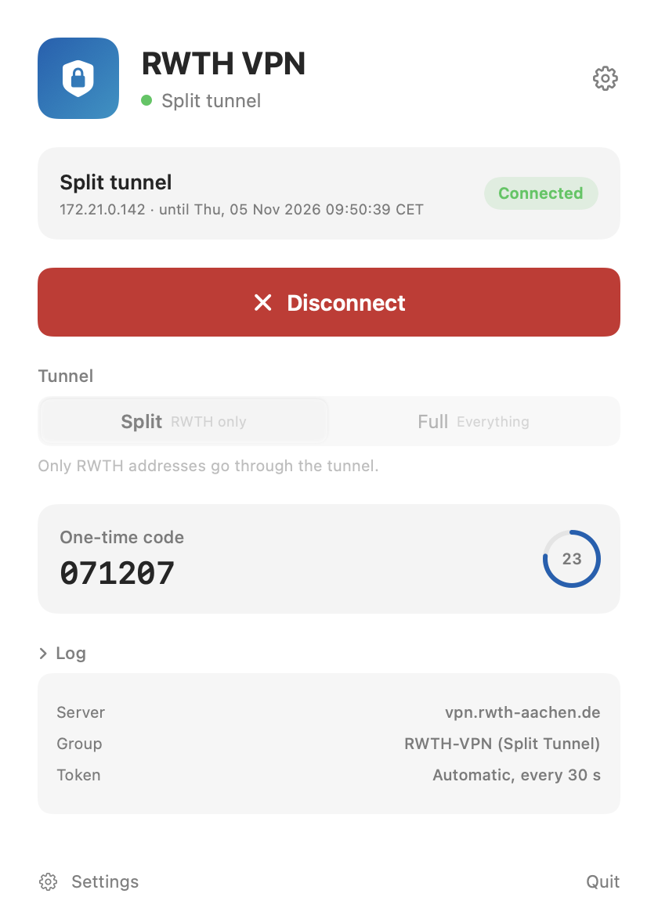

RWTH VPN
A small VPN client for RWTH Aachen.
CLI first · Apple Silicon · macOS 26+ · credentials stay in your Keychain.
Install the CLI
Recommended. No Homebrew and no app download required.
curl -fsSL https://raw.githubusercontent.com/amanmaurya2002/rwth-vpn/main/install.sh | bashThen run rwth-vpn setup and rwth-vpn connect. Setup asks for administrator authorization once to install the VPN helper.
Experimental desktop app
The native app provides a menu bar interface, but it is not notarized and requires macOS's Open Anyway approval.

CLI basics
- Configure credentials in the desktop app first; the CLI uses the same Keychain entries.
rwth-vpn statusshows helper and tunnel state.rwth-vpn uninstallremoves the CLI and helper; add--purgeto remove credentials too.
Why
The CLI keeps the workflow small: install one script, authorize the helper once, and connect from the terminal. Split tunnel is the default, so your local network keeps working.